星主 Jason 不跪 当天共发帖 14 条，覆盖美国政策、亚太货币政策、地缘油价、中国就业/人口/房价四大主线。 本报告逐帖转写原文、解读图表、补充背景与延伸知识，帮助你把零散的新闻串成对宏观经济的系统理解。
今日要点速览
今天 Jason 的帖子可以归成四条主线。第一条是美国的两项政策：特朗普宣布 8 月起对仿制药分阶段征收惩罚性关税（逼制造业回流），以及 Bloomberg 揭露富人用"定制 ETF（351 换股）"合法递延资本利得税——一个讲"逼产业回来"、一个讲"税收怎么被合法绕开"，都是在观察美国财政与产业政策的张力。第二条是亚太央行的加息周期：花旗、高盛、野村不约而同盯着韩国、印度、新西兰的升息路径，市场定价普遍比机构更鹰，Jason 借此表达"极度看多韩股"的倾向。第三条是地缘政治推升油价的尾部风险：伊朗—以色列—霍尔木兹—红海的紧张让高盛警告布伦特原油四季度可能冲破 120 美元。第四条、也是今天分量最重的一条，是中国内部的结构性压力：青年失业率、地方出生数据、房价去化、以及人社部"十五五"规划里悄悄放宽的就业目标，共同指向一个 Jason 反复强调的判断——未来几年就业与人口的压力会更大，钥匙握在宏观改革手里。
逐帖解读
帖 1 · 16:42 · 特朗普对仿制药征税 #政策分析
帖子原文
特朗普对仿制药进口征税。根据美国国际贸易委员会的最新研究估算： 印度约满足美国 40% 的仿制药需求； 中国和印度合计供应美国约 70%—80% 的仿制药； 但印度制药业自身又有约 70%—80% 的原料药依赖中国。
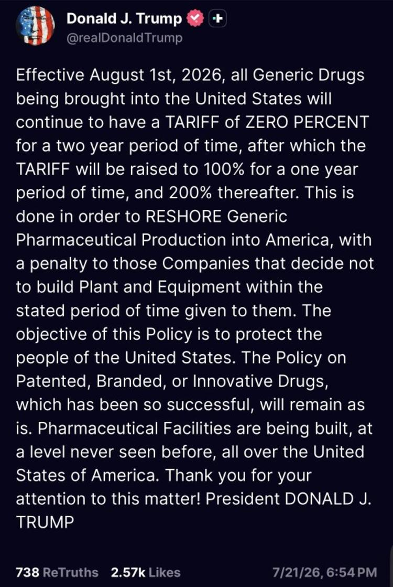
一句话核心：特朗普用"先零关税、后 100%/200% 阶梯关税"的方式，逼仿制药产业链搬回美国，但这条链条的底层原料仍卡在中国手里。
背景与关键数据：图片是特朗普在自家社交平台 Truth Social 的原帖（7/21 晚 6:54，738 转发、2570 赞）。核心内容是：自 2026 年 8 月 1 日起，所有进口仿制药先维持 零关税两年，两年后升到 100% 一年，之后 200%。目的写得很直白——"reshore（回流）"仿制药生产，对那些决定不在美国建厂的公司施加惩罚；专利药/品牌药/创新药维持现状不受影响。 几个术语用大白话说：**仿制药（Generic Drugs）**是专利到期后别家仿制的便宜药，占美国处方量的九成，是控制医疗成本的关键；**原料药（API）**是做药的化学"半成品"，是产业链最上游。Jason 补的三个数字点破了关键矛盾：印度是美国仿制药的主力供应国（约 40%），但印度自己 70—80% 的原料药又来自中国。
图片解读：这张就是政策原文截图，没有图表。重点是时间表（8/1 起→2 年后 100%→再之后 200%）和"只打仿制药、不碰专利药"的区分。
为什么重要 / 对市场和经济的含义：短期看，关税要两年后才咬人，象征意义大于即时冲击；但它给药企一个明确信号——要么来美国建厂，要么两年后挨刀。真正的软肋是原料药：就算印度、美国把制剂产能搬过去，上游原料仍依赖中国，"去中国化"没那么容易一步到位。对市场而言，利好在美国本土建厂的仿制药与 CDMO（代工）企业，利空高度依赖中印进口的美国药品分销商，并可能温和推高美国药价。
延伸知识：这是典型的**"关税回流"产业政策**——用贸易壁垒把制造业逼回本土，逻辑和特朗普对芯片、汽车的做法一脉相承。经济学上要注意"供应链纵深"：把最终组装（制剂）搬回来相对容易，把整条链（尤其是上游原料）都搬回来极难，因为中国在原料药上的成本和规模优势是几十年积累的。历史上类似的例子是稀土——美国也能开采，但精炼环节仍高度依赖中国。
帖 2 · 16:21 · 富人用"定制 ETF"避税 #其他国家经济
帖子原文（节选转写）
bloomberg：华尔街近年快速兴起的一种税务策略：富有投资者把持有多年、积累了巨额未实现收益的股票，以非现金方式注入一只新设 ETF，再利用 ETF 的实物申赎机制逐步换出这些股票，从而完成投资组合分散，却不立即触发资本利得税。这类操作被称为 351 conversion……对 SEC 文件的分析识别出 105 只通过 351 交换创建的 ETF；上市时合计资产约 221 亿美元；至少帮助递延了约 65 亿美元内含资本利得；超过一半是最近一年上市。繁荣原因有三：1）美股长牛制造巨额浮盈（过去十年标普涨约四倍）；2）2019 年 ETF 规则改革降低设立门槛；3）财富管理机构开始主动组织客户"拼盘"。
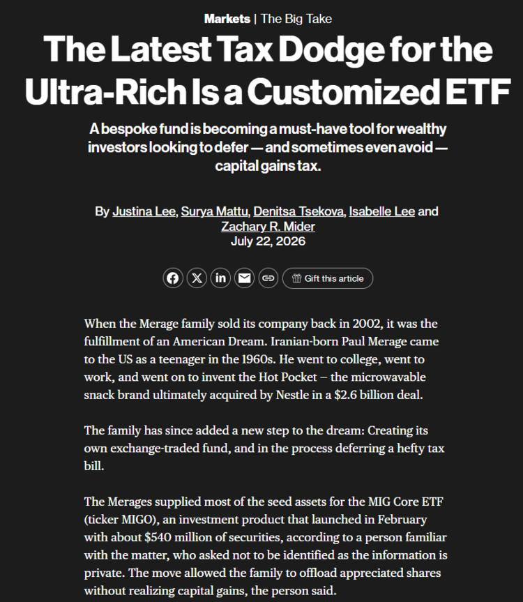
一句话核心：有钱人把浮盈巨大的股票"塞进"一只新 ETF，就能一边分散风险、一边把该交的资本利得税无限期往后拖。
背景与关键数据：图片是 Bloomberg 头版专题《The Latest Tax Dodge for the Ultra-Rich Is a Customized ETF》（7/22）。案例主角是 Merage 家族（发明微波食品"Hot Pocket"，2002 年 26 亿美元卖给雀巢），他们给自家新 ETF（代码 MIGO）注入约 5.4 亿美元证券，从而把升值股票"卸货"却不确认资本利得。 关键机制：美国《国内税收法》第 351 条规定，如果投资者把财产转移给一家公司并在交易后控制它，通常不用立即为资产升值确认资本利得。所以这不是永久免税，而是"先不卖、先不交税"——把纳税时间往后推；再配合退休后低税率卖出，或身故后遗产成本基础重置（step-up in basis，继承时成本按市值重算，之前的浮盈永久免税），税负可能进一步降到甚至归零。
图片解读：是 Bloomberg 文章的标题页，没有数据图，核心是案例和"221 亿资产 / 递延 65 亿税"这组量级。
为什么重要 / 对市场和经济的含义：Jason 点睛的一句是"从这个角度观察美国利润与宏观税收的脱节"。意思是：企业和富人账面财富大涨，但对应的税收并没有同步进国库，因为一大块资本利得被合法递延了。这解释了为什么美股大牛市却没带来相称的资本利得税收入，也是理解美国财政赤字的一个微观视角。
延伸知识：资本利得税递延是理解富人财富积累的关键。普通人工资一到手就被预扣税，而富人的财富主要以未实现的股票浮盈存在——不卖就不交税，这就是"Buy, Borrow, Die（买入、抵押借钱花、身故重置成本）"策略的核心。351 ETF 只是把这套玩法产品化、标准化了。延伸阅读方向：可了解"税收 Alpha"（通过税务安排获得的超额收益）和美国关于"未实现收益是否该征税"的政策辩论。
帖 3 · 16:06 · 花旗看多韩股、市场比机构更鹰 #金融
帖子原文
花旗：市场对亚洲多数央行的加息定价，普遍比我们更鹰。我们极度看多韩国股市，维持 KOSPI 10,000 目标。外汇策略偏好印度卢比、印尼盾和林吉特，回避泰铢。 （附件：Asia Economics & Strategy Daily_ KR_ Peak Headwinds, Powerful Tailwinds Ahead; HK Jun CPI.pdf）
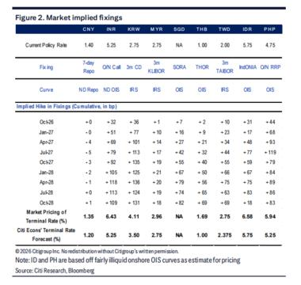
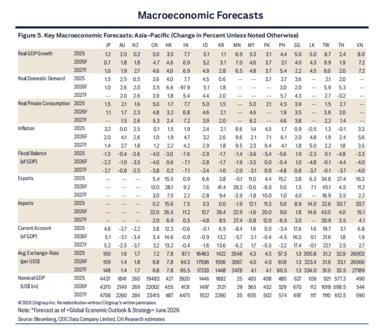
一句话核心：市场认为亚洲央行会比花旗预期加更多息（更鹰），而花旗在这种背景下依然极度看多韩股、看好印尼卢比等货币。
背景与关键数据：鹰派（hawkish）= 倾向加息/收紧；鸽派（dovish）= 倾向降息/宽松。"市场比我们更鹰"意思是：从利率期货推算，市场预期的加息幅度比花旗自己的预测更大。
图片解读：
- 图一（Figure 2 市场隐含利率定价）：一张各国央行政策利率表。当前政策利率：中国 1.40%、印度 5.25%、韩国 2.75%、马来 2.75%、泰国 1.00%、台湾 2.00%、印尼 5.75%、菲律宾 4.75%。最关键的是最下面两行对比——市场定价的"终端利率"（加息终点）明显高于花旗自己的预测：例如印度市场定价 6.43% vs 花旗 5.25%、韩国 4.11% vs 3.50%、台湾 3.75% vs 2.375%。差距越大，说明市场比机构越鹰。
- 图二（Figure 5 亚太宏观预测）：花旗对亚太各经济体 2025—2027 年 GDP 增长、内需、通胀、财政/经常账户、汇率的整张预测表，是上面判断的数据底座。
为什么重要 / 对市场和经济的含义：Jason 转这条，重点在"极度看多韩国 KOSPI 10,000"这个大胆目标（当前韩股远低于此）。逻辑是"Peak Headwinds, Powerful Tailwinds Ahead"——最坏的逆风（利率高点、出口压力）已过，顺风（AI/半导体周期、企业改革）在后头。这与今天多家机构的亚太乐观情绪呼应。
延伸知识：**终端利率（terminal rate）**指一轮加息周期的最高点，是债市和汇市定价的锚。当"市场定价 > 机构预测"时，往往意味着市场担心通胀更顽固；一旦实际加息不及市场预期，债券会涨、货币可能走弱。理解"市场隐含利率"能帮你读懂为什么同一个央行、不同人给出完全不同的资产判断。
帖 4 · 16:01 · 香港房价预计两年涨 19% #房价
帖子原文
bloomberg：BI 在一份报告中估计，2026 年和 2027 年，香港房价预计将上涨 19%。今年预计的 11% 涨幅将是近十年来最大的涨幅。
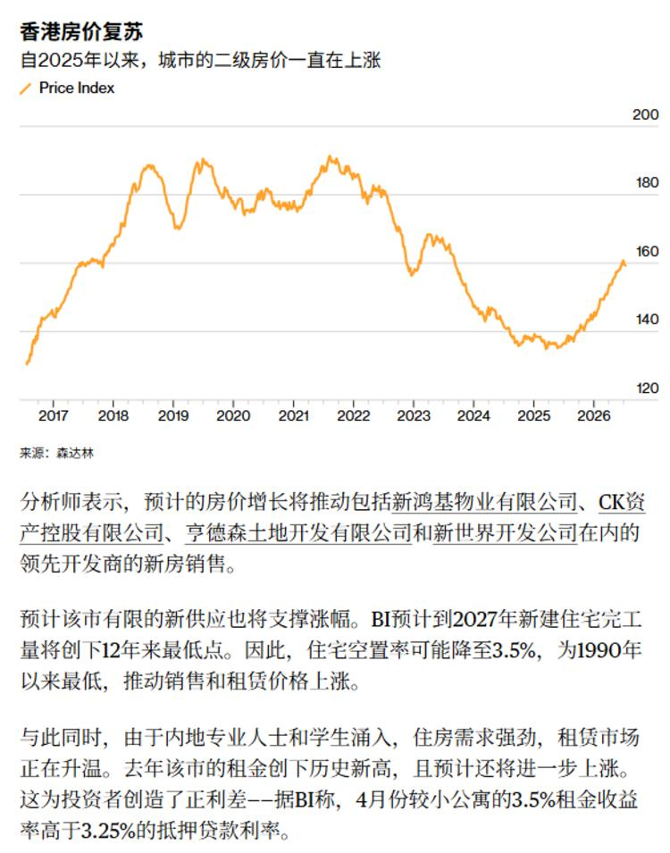
一句话核心：彭博行业研究（BI）预测香港房价触底反弹，未来两年累计涨约 19%，今年 11% 的涨幅是十年最大。
背景与关键数据：BI = Bloomberg Intelligence，彭博的行业研究部门。香港房价从 2021 年高点一路跌到 2025 年，如今被认为已见底回升。
图片解读：标题"香港房价复苏"，画的是 2017—2026 年香港二手房价格指数。可以清楚看到几个阶段：2017 年从约 130 起步→2018-2019 冲到约 185→2020 疫情回落→2021 再创约 188 新高→2022 起大跌至 2025 年约 130 的谷底→2026 年强劲反弹到约 158。橙线尾部那段陡峭的上翘，就是"复苏"的视觉证据。
为什么重要 / 对市场和经济的含义：正文补充了上涨逻辑：新供应稀缺（BI 预计 2027 年新建住宅完工量创 12 年最低，空置率或降至 3.5%、1990 年以来最低）+ 内地专业人士与学生涌入推动租赁需求。更关键的一个信号是"正利差"——4 月小公寓 3.5% 的租金收益率已高于 3.25% 的按揭利率，意味着买房收租能覆盖贷款成本，这通常是楼市投资价值回归的转折点。利好新鸿基、长实、恒基、新世界等香港龙头开发商。
延伸知识：判断楼市该看两把尺子——租金收益率 vs 按揭利率。当租金收益率 > 房贷利率（正利差），持有房产"以租养贷"划算，资金会回流楼市；反之（负利差）则是"越持有越亏"。香港楼市这轮反转，本质是美联储降息预期压低了港元利率（港元与美元挂钩），叠加供给收缩，让正利差重新出现。
帖 5 · 15:59 · 高盛跨资产预测（"高盛算命"）#金融
帖子原文
高盛算命。（附件：Micro vs. macro continued - momentum continues to unwind as energy prices rise further.pdf）
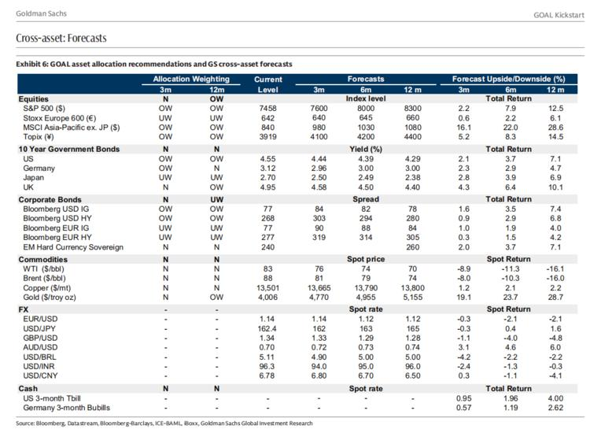
一句话核心：高盛给出未来 3/12 个月各类资产的配置建议和目标价，整体超配股票（尤其亚太和日本）、看空油价、极度看多黄金。
图片解读：这是高盛 GOAL（Global Opportunity Asset Locator）跨资产预测表，"算命"是 Jason 对卖方机构给目标价的调侃。逐块读：
- 股票（超配 OW）：标普 500 当前 7458，12 个月目标 8300（+12.5%）；日本 Topix 3919→4400（+14.5%）；MSCI 亚太除日本 12 个月 +28.6%（最看好）。
- 10 年期国债：美债收益率 4.55%，预计小幅回落到 4.29%。
- 大宗商品：WTI 原油 83→70 美元（-16%）、布伦特 88→74；黄金 4006→5155 美元（+28.7%），是全表涨幅最高的资产。
- 外汇：美元兑日元 162→165（日元续贬）、美元兑人民币 6.78→6.50（人民币升值）。
为什么重要 / 对市场和经济的含义：这张表浓缩了高盛的世界观——股票（尤其亚太）看涨、油价看跌、黄金大涨。注意它和帖 8 的矛盾：这里高盛基准情形看空油价（能源"动能瓦解"），但帖 8 的地缘尾部风险又能让油价飙到 120，说明这是"基准 vs 尾部"两套情景。黄金 +28.7% 的预测，反映高盛对去美元化、央行购金、实际利率下行的强判断。
延伸知识：超配（Overweight）/低配（Underweight）是机构相对基准指数的仓位建议，不是绝对看涨看跌。读卖方"目标价"要有分寸——它们是概率化的情景假设（所以叫"算命"），真正有价值的是背后的逻辑和资产间的相对排序（比如"亚太 > 美国 > 欧洲""黄金 > 原油"），而非某个精确数字。
帖 6 · 15:56 · 中国青年失业率或逼近 20% #经济数据
帖子原文
bloomberg：未来两个月青年失业率将接近 20%。
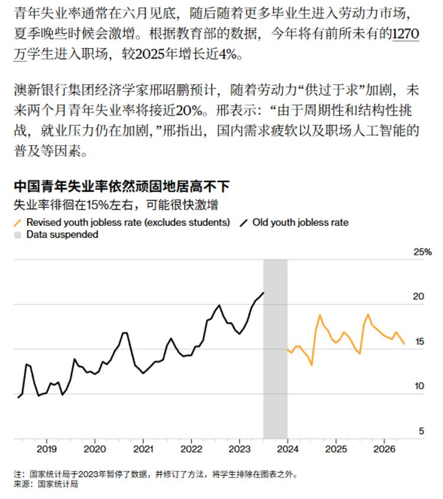
一句话核心：随着 1270 万毕业生涌入就业市场，中国青年失业率在夏末可能冲到接近 20%。
背景与关键数据：图片正文写道，青年失业率通常 6 月见底、夏末激增；今年有创纪录的 1270 万学生进入职场，较 2025 年增长近 4%。澳新银行（ANZ）经济学家邢昭鹏预计，因周期性和结构性挑战（内需疲软 + 职场 AI 普及），未来两个月青年失业率将接近 20%。
图片解读：标题"中国青年失业率依然顽固地居高不下"。图里有两条线要分清：黑线是旧口径（含在校学生找工作的），2019—2023 年一路爬升，2023 年中冲破 20% 后国家统计局暂停发布并修订方法（图中灰色阴影区）；橙线是新口径（剔除在校学生），2024 年起重新公布，在 15% 上下剧烈波动，每年夏天（毕业季）都有一个尖峰。橙线尾部（2026 年）正处在又一个季节性上冲的位置。
为什么重要 / 对市场和经济的含义：青年失业率是观察中国内需和社会压力最敏感的指标之一。它"顽固居高"说明经济复苏没有转化为足够的年轻人岗位，叠加 AI 替代白领初级岗位，结构性问题在加深。这和今天帖 13（出生下滑）、帖 14（就业规划放宽）构成同一条"中国人口—就业压力"主线。
延伸知识：注意"统计口径"这个坑——2023 年后中国把在校学生剔除出青年失业率分母，数字因此从 20%+ 降到 15% 左右，但这更多是"分母变大/换算方式变了"，不代表实际就业变好。读任何失业率、通胀率数据，都要先问"口径变没变"。延伸概念：摩擦性失业（找工作的时间差）vs 结构性失业（技能与岗位不匹配），青年失业更多是后者，也是帖 14 讨论"职业培训"的由来。
帖 7 · 15:45 · 德国对华汽车出口大跌 #其他国家经济
帖子原文
bloomberg：德国对中国的汽车和零部件出口在 2026 年前五个月较去年同期下降超过四分之一，大众第二季度中国销量下滑 37%。
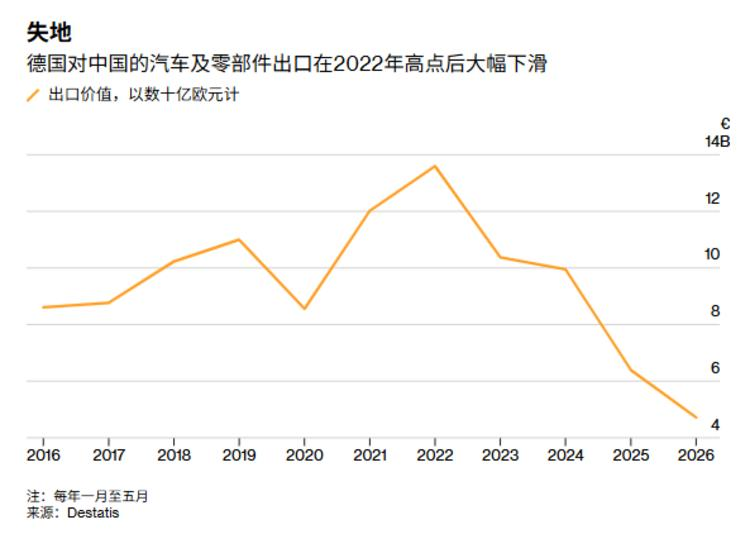
一句话核心：德国汽车在中国市场节节败退，对华汽车出口今年前五个月同比暴跌超 25%，大众二季度中国销量近乎腰斩三成七。
图片解读：标题"失地"，画的是 2016—2026 年德国对华汽车及零部件出口价值（单位：十亿欧元，每年 1—5 月）。曲线从 2016 年约 8B 起步，2019 年到约 10.5B，2022 年冲上约 13.5B 的历史高点，随后一路下滑：2023 约 10B、2024 约 9.5B、2025 约 6B，2026 年跌到约 4B——较高点几乎砍掉七成。橙线右半段的陡坡把"失地"两个字画得淋漓尽致。
为什么重要 / 对市场和经济的含义：这是全球产业格局变迁的缩影。中国从德系车的最大市场，变成本土电动车（比亚迪等）的主场，德国传统燃油车巨头（大众、宝马、奔驰）在电动化转型上掉队，市场份额被本土品牌蚕食。这不只是几家车企的问题，汽车是德国的支柱产业，对华出口崩塌会拖累整个德国制造业和欧元区经济。
延伸知识：这体现了"产业追赶与替代"——后发国家先靠合资学技术，再在新技术拐点（电动化）实现弯道超车。日本车 1970-80 年代冲击美国、韩国车 2000 年代崛起，都是同一剧本，如今轮到中国电动车对德日车。对投资者的启发：当一个国家的"支柱产业"遭遇结构性替代，其货币、股市和财政都会承压。
帖 8 · 15:41 · 伊朗—霍尔木兹地缘风险与油价 #金融
帖子原文（节选转写）
zerohedge：特朗普淡化了与伊朗立即谈判的可能性，胡塞武装向船东发出邮件，警告不要停靠沙特港口。阿联酋游说欧盟应更主动参与通航。赫格塞斯表示美国已在此次战争中投入 375 亿美元。高盛大宗商品专家 Daan Struyven 周一警告客户：如果霍尔木兹海洋瓶颈持续受扰，布伦特原油四季度可能飙升超过每桶 120 美元。
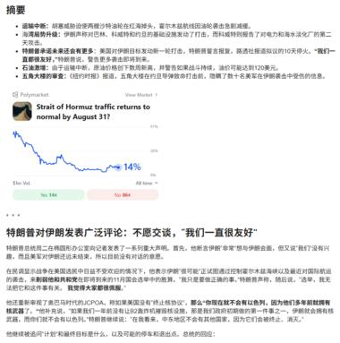
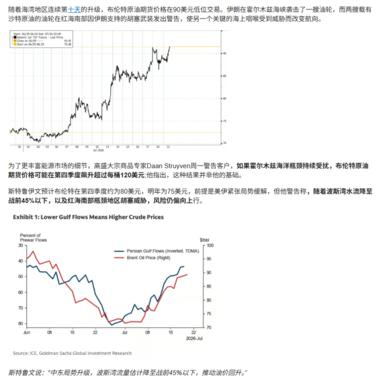
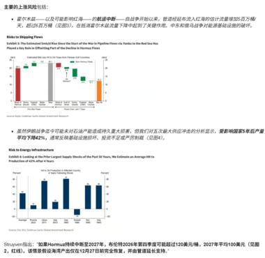
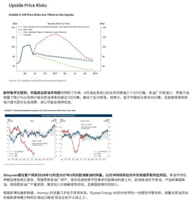
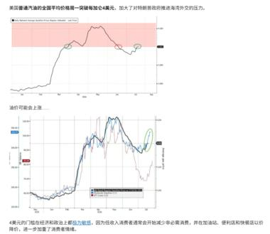
一句话核心：中东（伊朗/以色列/胡塞/红海/霍尔木兹）紧张升级，一旦石油要道被卡，高盛测算布伦特原油四季度可能突破 120 美元。
背景与关键数据：霍尔木兹海峡是全球最重要的石油咽喉，约五分之一的海运原油从这里通过；红海—曼德海峡是另一条要道，被也门胡塞武装威胁。战争已烧掉美国 375 亿美元。
图片解读：
- 摘要图（img1）：罗列多条战线——革命卫队称打了巴拿马数据中心、袭击科威特海水淡化厂、油轮在胡塞警告后红海掉头等；还嵌了一个 Polymarket 预测盘："霍尔木兹通航能否在 8 月 31 日前恢复正常"，市场只给 14% 概率，说明市场认为乱局会持续。
- 高盛油价图（img6-9）：核心是 Daan Struyven 的分析。Exhibit 1"Lower Gulf Flows Means Higher Crude Prices"——把波斯湾石油流量（反向坐标）和布伦特油价叠在一起，显示"流量越降、油价越高"的镜像关系；测算若海湾流量降 45%，油价将向 120 美元靠拢。另有"油价上行风险""美国普通汽油突破每加仑 4 美元"等图，说明油价一旦破 4 美元/加仑，会压制美国消费。
为什么重要 / 对市场和经济的含义：这是今天与帖 5（高盛基准看空油价）形成的关键对冲。基准情形下能源需求走弱、油价回落；但地缘尾部情形下，供给端一旦被切断，油价可能瞬间飙升，进而推高通胀、拖累消费、打乱各国央行的降息节奏。对资产的含义：能源股、油运是这种尾部风险的对冲工具，而航空、消费是受害者。
延伸知识：尾部风险（tail risk）指发生概率低但冲击极大的事件（如战争封锁海峡）。油价对供给中断极其敏感，因为短期需求刚性（车照开、厂照转），供给一少价格就暴涨——这就是 1973 石油危机、2022 俄乌冲突的剧本。学会区分"基准情景"和"尾部情景"，是理解为什么同一家机构（高盛）会同时看空油价又警告 120 美元的关键。
帖 9 · 15:29 · 政府年末"突击花钱"的论文 #TAX #论文或书籍推荐
帖子原文（节选转写）
CRE：利用中国 2015—2021 年约 118 万份政府采购合同，研究政府部门为什么在年底集中突击支出。核心结论：年末突击花钱不只因为"钱今年不用就作废"，更因为预算存在棘轮效应——今年没花完，上级可能据此砍下一年预算。年末突击还会降低采购质量……估算约 5.25% 的采购属非正常年末集中采购；实施零基预算改革后，年末采购合同减少 15.8%，年末采购支出下降 12.34%。
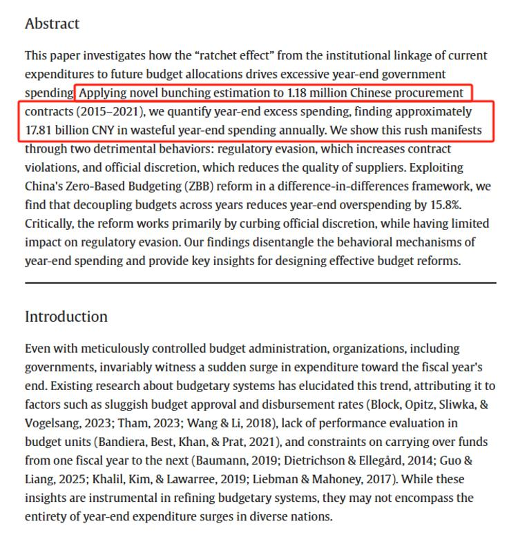
一句话核心：政府年底集中突击花钱，根子在"预算花不完就会被砍"的棘轮效应，而突击采购还会拉低采购质量、造成制度性浪费。
图片解读：图片是这篇论文的英文摘要（Abstract）。红框标出关键数据：用118 万份中国政府采购合同（2015—2021），通过"bunching estimation（聚束估计）"量化，发现每年约 178.1 亿元人民币的年末浪费性支出。浪费通过两种行为体现：规避监管（简化/拆分合同）和官员自由裁量（选质量差、议价弱的供应商）。利用零基预算（ZBB）改革做双重差分，发现"跨年度解耦预算"能让年末超支减少 15.8%，主要通过约束官员裁量权起作用。
为什么重要 / 对市场和经济的含义：这是理解中国财政效率和化债的一块微观拼图。年末突击花钱是全球通病（叫"use it or lose it"），但中国的棘轮效应更强。在当前地方财政吃紧、要"过紧日子"、推进化债（收紧信用）的背景下，这类研究说明"提高存量财政资金的使用效率"本身就是一种潜在的增长空间——少浪费，等于多财政。
延伸知识：**棘轮效应（ratchet effect）**原指"由俭入奢易、由奢入俭难"，在预算里是"这次多花了，下次就以此为基准"。**零基预算（Zero-Based Budgeting）**是对症的解药——每年预算从零开始重新论证，而不是"在去年基础上加几个点"，能挤掉沉淀的水分。这套逻辑对企业成本管理同样适用（3G 资本收购公司后就常用 ZBB 砍成本）。
帖 10 · 15:17 · 楼市"库存降、去化周期反升" #房价
帖子原文（节选转写）
克而瑞：2026 年上半年，重点 50 城商品住宅库存总量连续多季度回落，但去化周期却不降反升。表面看库存下降像出清的积极信号，但深入看，这种下降更多源于供应端被动收缩而非需求端主动吸纳。当"去库存"的动力主要来自"少建"而非"多卖"，去化周期的攀升就有了内在必然性。
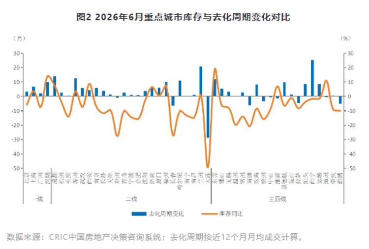
一句话核心：房子库存虽然在减少，但卖得更慢了——因为库存下降靠的是开发商"少盖房"，而不是老百姓"多买房"。
背景与关键数据：去化周期= 当前库存 ÷ 近 12 个月月均成交，表示"照现在的销售速度，清完库存要几个月"。周期越长越危险。
图片解读：标题"图 2 2026 年 6 月重点城市库存与去化周期变化对比"。横轴是各城市（分一线、二线、三四线三组），有两个序列：蓝色柱=去化周期变化、橙线=库存同比。可以看到大部分城市橙线（库存）在零轴下方（同比下降），但蓝柱（去化周期）很多为正（周期拉长）。个别三四线城市蓝柱冲到 +20 甚至更高，橙线深跌到 -40%——正是"库存猛降、但去化反而更慢"的极端写照。
为什么重要 / 对市场和经济的含义：这戳破了"库存下降=楼市转好"的错觉。健康的去库存应该是"需求旺、卖得快"；而当前是"开发商没钱/没信心拿地开工，供给被动萎缩"造成的虚假改善。去化周期拉长意味着实际需求仍弱，房价压力未解，对上游（土地财政、建材、家电）的拖累会延续。这与帖 11（经纪人仍悲观）互相印证。
延伸知识：分析库存要区分"主动去库存（需求驱动，销量升）"和"被动去库存（供给收缩，销量没升甚至降）"——两者对经济含义完全相反。类似地，读企业财报的"存货下降"也要问：是卖得好（健康）还是砍生产（收缩）？这是一种通用的"看数字更要看数字背后动因"的思维。
帖 11 · 15:12 · 高盛地产周报：经纪人仍偏悲观 #房价
帖子原文（节选转写）
高盛：中原经纪人指数 CSI 第 29 周平均环比上升 0.7 个百分点，CSI 反映经纪人对未来房价的判断——高于 50 代表预期上涨、低于 50 代表预期下跌。虽环比改善，但仍低于 50，意味着悲观程度减轻但整体仍预期偏弱。卖方报价指数 CAI 环比升 0.1 个百分点，但处近年低位，说明房东仍缺乏提价能力。
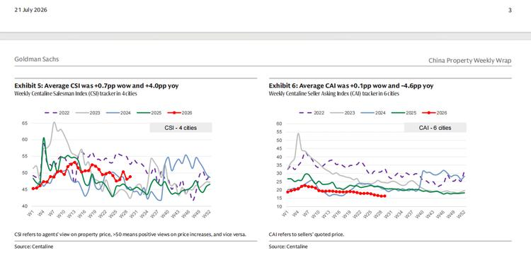
一句话核心：一线城市房产经纪人对房价的悲观情绪略有缓解，但整体仍看跌，房东也还没底气涨价。
图片解读：来自高盛《China Property Weekly Wrap》。
- Exhibit 5（CSI，4 城经纪人指数）：不同年份用不同颜色线，红线是 2026 年。CSI 是"经纪人对房价的看法"，>50 看涨、<50 看跌。2026 年红线在 45 上下徘徊，全年低于 50，说明经纪人普遍预期房价还会跌，只是最近略有回升。
- Exhibit 6（CAI，6 城房东报价指数）：反映房东挂牌报价意愿，2026 年红线在 15-20 的近年低位，说明房东不敢涨价。
为什么重要 / 对市场和经济的含义：这是从市场参与者情绪（经纪人、房东）侧面验证帖 10 的结论——楼市的真实需求和信心仍弱。情绪指标往往领先成交和价格，CSI 长期在 50 以下，意味着价格企稳还需时间。
延伸知识：像 CSI/CAI 这类"扩散指数（diffusion index）"以 50 为荣枯线，是经济学里非常常见的设计（PMI 采购经理人指数也是如此）。它不告诉你涨跌幅度，只告诉你"看涨的人多还是看跌的人多"，胜在及时、领先。学会看荣枯线，能帮你在硬数据（成交、价格）出来前就嗅到拐点。
帖 12 · 14:46 · 新西兰通胀超预期、9 月大概率加息 #其他国家经济
帖子原文（节选转写）
新西兰 6 月 CPI 发布后，各机构均展望 9 月继续加息，分歧集中于终点：花旗认为 2.75% 足够，高盛和野村预计 3.0%，摩根大通则认为可能升至约 3.5%……市场已替 RBNZ 完成约 110bp 的加息定价（约 4—5 次 25bp）。野村看多纽币。
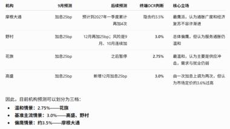
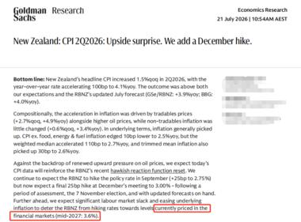
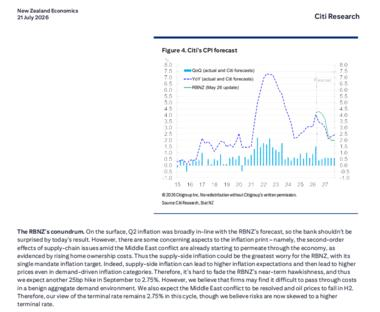
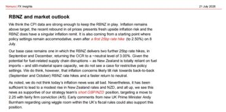
一句话核心：新西兰通胀爆表，各大投行都认为央行（RBNZ）9 月会继续加息，只是对"加到哪"分成 2.75%、3.0%、3.5% 三档，野村因此看多纽元。
背景与关键数据：RBNZ = 新西兰联储；OCR = 官方现金利率（新西兰的基准利率）；bp = 基点，100bp=1%。"市场替 RBNZ 定价 110bp"意思是利率期货已经把 4-5 次加息算进价格里了。
图片解读：
- 图一（中文对照表）：把四家机构的 9 月预测、后续路径、终端 OCR 和核心立场排在一起。摩根大通最鹰（终端 3.5%，预计到 2027Q1 还要再加 3-4 次）；高盛、野村居中（3.0%）；花旗最鸽（2.75%，之后暂停）。三档情景一目了然。
- 图二（高盛）："CPI 二季度上行意外，我们新增一次 12 月加息"，headline CPI 环比 +1.5%、同比 +4.1%，双双高于预期；市场中期（2027 年中）已定价到 3.6%。
- 图三（花旗）：Citi 的 CPI 预测图 + "RBNZ 的两难"，认为终端 2.75% 但风险偏上。
- 图四（野村）：基准是 9 月、12 月各加 25bp 到中性 3.0%，并看多纽元（short GBP/NZD）。
为什么重要 / 对市场和经济的含义：在全球主要央行普遍讨论降息的当下，新西兰却因通胀反弹要逆势加息，这是个反差信号。它提醒我们通胀并非全球同步回落，小型开放经济体（依赖进口和食品/能源）更容易受二次通胀冲击。对交易而言，"加息预期升温 + 市场未完全定价" = 货币（纽元）走强的逻辑。
延伸知识：为什么加息利好货币？因为更高利率吸引国际资金流入赚息差（利差交易 carry trade）。但要看"预期差"——如果市场已定价 110bp，而央行只加 100bp，纽元反而可能跌。这就是野村强调"市场定价 vs 实际路径"的原因。理解"利多出尽"和"预期差"，是外汇和债券交易的核心。
帖 13 · 14:26 · 地方高频出生数据同比下滑 #人口
帖子原文
知乎（江畔湘山寺）：更新一些地方高频出生侧面数据，chatgpt 估算大概上半年同比 -12% 左右。
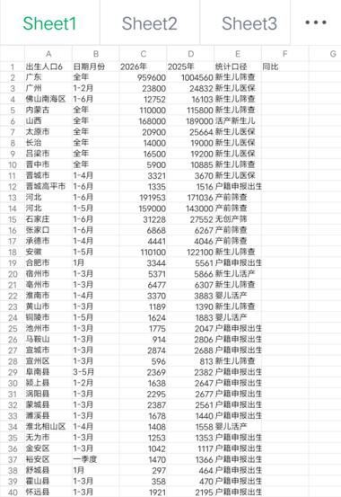
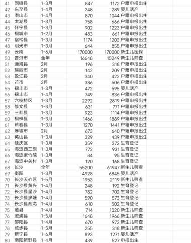
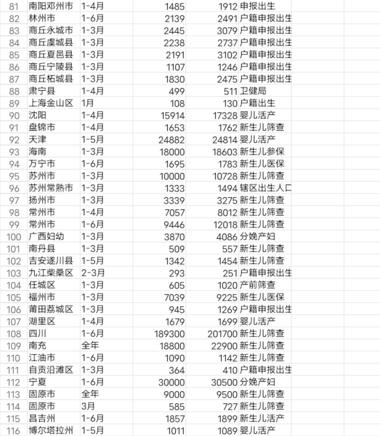
一句话核心：从各地零散公布的出生/上户/建档数据看，2026 年上半年出生人数同比又降了约 12%。
背景与关键数据："高频/侧面数据"指官方全国数字出来前，从各地卫健、公安上户、生育登记等渠道抓到的先行样本。
图片解读：三张图是一份电子表格，逐行列出各地 2026 年与 2025 年的出生相关数字，含地区、统计月份、2026 数、2025 数、统计口径、同比。例如广东全年 959,600（2026）vs 1,004,560（2025）；广州 1-2 月 23,800 vs 24,832（新生儿）；很多县市都是 2026 < 2025。口径五花八门（新生儿筛查、活产、户籍报出生、建档等），但方向高度一致——普遍下滑，支撑了"上半年约 -12%"的估算。
为什么重要 / 对市场和经济的含义：出生数据是长周期最强的宏观变量，决定 20 年后的劳动力、消费和养老负担。连续下滑意味着中国人口负增长在加速，长期利空地产、教育、母婴等行业，长期利好养老、医疗。它和帖 6（青年失业）、帖 14（就业规划）共同拼出"人口—就业"的完整压力图景。
延伸知识：人口是慢变量但影响最深远。出生率下降有惯性——今天少生的孩子，20 年后就是少掉的劳动力和购房需求，几乎不可逆。经济学上叫"人口红利"的反面"人口负债"。判断一国的超长期增长，人口结构（尤其是年轻人口占比）往往比短期 GDP 更重要。这也是为什么 Jason 持续追踪这类"侧面数据"——它比官方年报更早、更真实。
帖 14 · 13:58 · 人社部"十五五"就业规划的四个变化（存档长文）#人口 #就业
帖子原文（全文转写）
未来 5 年就业压力会更大（存档） 人力资源和社会保障部更新了"十五五"工作规划，和"十四五"主要指标相比有几点变化： 1、这次官方不再给"新增就业人数"的承诺。（十四五给的是 5000 万人以上）之前也吐槽过，新增就业人数象征意义太强，因为它不是"净增"。蔡昉之前给过一个净增推导数值——可以看到 2012 年后就一直是负值。所以不给具体数字我倒不觉得有啥问题，但也说明官方创造岗位的工具箱可能确实受到约束。这点关联债务约束和化债（紧信用），有指导意义。 2、失业率目标放宽了。 这次是 <5.5%，上次是 <5%。不要小看这个小数点变动，这代表官方也很清楚，在中枢、AI、财政等多方面不确定共振下，就业市场压力大概率更大。 3、职业培训目标数大幅缩水。 农民工培训从 3000 万降到 1750 万。按理说应对摩擦性失业最重要的工具就是职业培训……我是觉得应该培训加码才对，日本当年就是加码应对就业冰川期。 4、多了城镇失业人员再就业、就业困难人员就业的指标。 说明重心变了，已经预见到失业激增的问题。而预见往往来自当下（已经非常糟糕）。
一句话核心：从人社部"十五五"规划的四处微调可以读出——官方自己也预判未来五年就业会更难，于是悄悄放宽了目标、把重心转向"稳住已失业和困难群体"。
背景与关键数据：这是今天分量最重的一帖，是 Jason 亲自撰写的长文分析（非转发）。"十四五""十五五"是中国的五年规划；蔡昉是研究中国劳动力与人口的权威经济学家。
为什么重要 / 对市场和经济的含义：规划文件的"措辞变化"往往比新闻更能反映官方真实判断。四个变化连起来读：不再承诺新增就业（工具箱受约束、和化债紧信用相关）+ 失业率目标从 5% 放宽到 5.5%（默认压力更大）+ 职业培训目标砍近半（Jason 认为反常，本该加码）+ 新增"再就业/困难群体就业"指标（重心从"创造增量"转向"托底存量"）。Jason 的落脚点是：打开"就业回血"的钥匙在宏观改革，而当前机构讨论的方式（更多刺激）他认为会恶化就业；改革虽痛，但比激进方式安全，"现在就看渐进有多渐进"。
图片解读：原文中嵌有两张图（蔡昉的"净增就业推导"约 2012 年后转负、以及央行调查数据），本报告因该长文以文章形式发布、图片未随列表加载而未能单独抓取；但正文已完整转写，核心信息不受影响。
延伸知识：读懂**政策文本的"措辞学"**是宏观分析的高阶技能——目标从"确保"改成"力争"、数字从有到无、阈值从 5% 到 5.5%，每一处都是信号。另一个概念是"净增就业 vs 新增就业"：新增就业只统计新找到工作的人（不减去失业的），会高估；净增才是真实的就业增量。日本 1990 年代"就业冰河期"的教训是——当就业市场结构性恶化时，回避（不作为）会让一代年轻人长期受损，这正是 Jason 引以为鉴、主张"培训应加码"的历史参照。
今日全图索引
| 帖号 | 时间 | 主题 | 标签 | 图片文件 |
|---|---|---|---|---|
| 1 | 16:42 | 特朗普对仿制药阶梯征税 | #政策分析 | post1_img1 |
| 2 | 16:21 | 富人"定制 ETF"避税（351 换股） | #其他国家经济 | post2_img1 |
| 3 | 16:06 | 花旗看多韩股·市场比机构更鹰 | #金融 | post3_img1, post3_img2 |
| 4 | 16:01 | 香港房价两年预计涨 19% | #房价 | post4_img1 |
| 5 | 15:59 | 高盛跨资产预测（股涨·油跌·金大涨） | #金融 | post5_img1 |
| 6 | 15:56 | 中国青年失业率或逼近 20% | #经济数据 | post6_img1 |
| 7 | 15:45 | 德国对华汽车出口大跌 | #其他国家经济 | post7_img1 |
| 8 | 15:41 | 伊朗·霍尔木兹地缘风险与油价（布伦特或破 120） | #金融 | post8_img1~9 |
| 9 | 15:29 | 政府年末"突击花钱"论文 | #TAX #论文或书籍推荐 | post9_img1 |
| 10 | 15:17 | 楼市"库存降·去化周期反升" | #房价 | post10_img1 |
| 11 | 15:12 | 高盛地产周报·经纪人仍偏悲观 | #房价 | post11_img1 |
| 12 | 14:46 | 新西兰通胀超预期·9 月或加息 | #其他国家经济 | post12_img1~4 |
| 13 | 14:26 | 地方高频出生数据同比 -12% | #人口 | post13_img1~3 |
| 14 | 13:58 | 人社部"十五五"就业规划四变化（长文） | #人口 #就业 | （长文内嵌图未单独抓取） |
数据来源：知识星球「南半球聊财经」星主 Jason 不跪 2026-07-21 全部帖子。原图存于
daily_summaries/jason_images/2026-07-21/。 本报告为个人学习用途的解读整理，不构成任何投资建议。